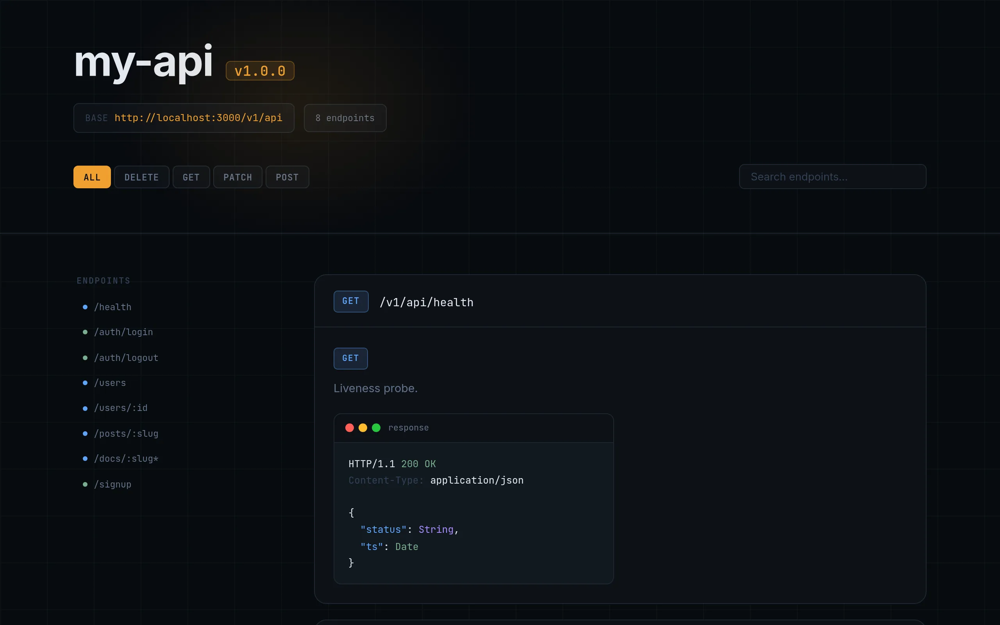
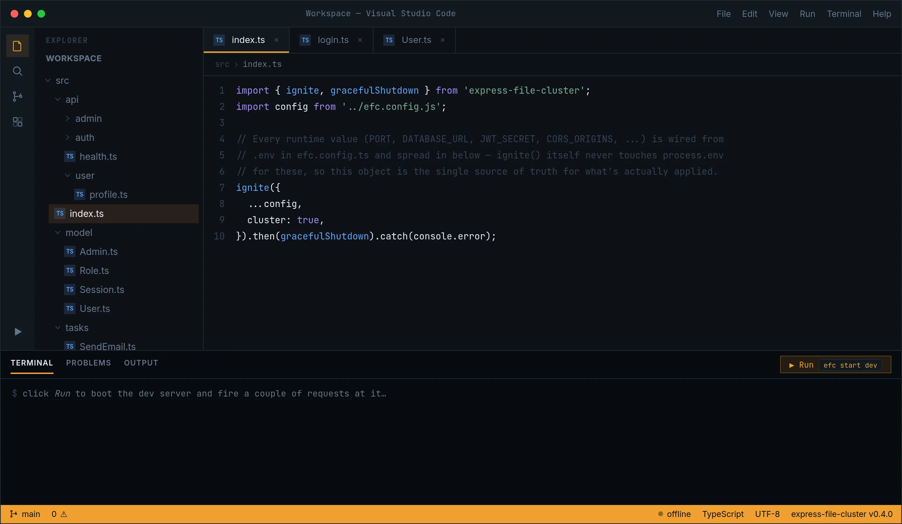

Every Express app starts with the same chores: a router, a cluster, a queue, auth, a database layer. EFC does them once, so your app starts at the part that's actually yours.
0.9.2Zero audit
findings: password hashing built in
Express, but your folder
Express, but your folder
is your router.
Drop a file in src/api/ and it's a route. Clustering,
background jobs and a typed data layer are already set up.
$ npx create-efc-app my-api
Read the docs


Left: the route dashboard every app serves in development. Right: the project that produced it.
Routing
The file tree is the route table.
EFC reads src/api/ when the server starts. Rename a file and its URL changes with
it.
A file is a route
Export GET, POST and so on. Methods you leave out answer 405 by themselves.
Brackets are params
[id].ts becomes :id. Static paths always win, so /users/me never
reaches /users/:id.
Optional and catch-all
[[id]] is optional. [...slug] takes the rest of the path as an array.
Validated on the way in
export const schema takes zod, valibot or arktype. Bad input gets a 400 before your
handler runs.
src/api/
health.ts
users/
index.ts
[id].ts
docs/
[...slug].ts
[[team]].ts
Routes
GET/health
GET/users
POST/users
GET/users/:id
GET/docs/:slug*
GET/:team?
// GET /health export const GET = (req, res) => { res.json({ ok: true }) } // POST /health → 405, no code needed
// GET /users/:id import { HttpError } from 'express-file-cluster' export const GET = async (req, res) => { const user = await User.findById(req.params.id) if (!user) throw new HttpError(404, 'Not found') res.json(user) }
// GET /docs/guides/auth export const GET = (req, res) => { req.params.slug // ['guides', 'auth'] res.json(lookup(req.params.slug)) }
import { z } from 'zod' export const schema = { params: z.object({ id: z.string().uuid() }), } // GET /users/42 → 400 { issues: [...] }
Clustering
One worker per CPU core.
In production the primary process forks a worker for each core and replaces any that crash. Try crashing one.
On shutdown, SIGTERM reaches every worker, so open requests and running jobs
finish first.
requests 0 · alive 4/4
primary :3000
Background jobs
Reply first. Do the slow work after.
Each file in src/tasks/ is a job. Queue it from a handler and return 202. It runs
on BullMQ or pg-boss, with retries.
import { defineTask } from 'express-file-cluster/tasks' export default defineTask<{ to: string }>( { retries: 3 }, async ({ to }) => { await mailer.send(to) }, ) // in a route handler await enqueue('SendWelcome', { to: user.email }) res.status(202).json({ queued: true })
Request received
validate, create user
Job queued
enqueue('SendWelcome')
202 sent
the user moves on
Attempt 1 failed
SMTP timeout, retry in 1 s
Attempt 2 sent
job complete
Data
Describe the model. Get the types.
Types come from the schema, and tables or collections are created on first use.
defineModel runs on MongoDB and PostgreSQL. defineTable adds relations on
PostgreSQL.
export const Post = defineTable('Post', { title: { type: 'string', required: true }, author: { type: 'uuid', ref: 'User' }, tags: { type: 'array', of: 'uuid', ref: 'Tag' }, }) const posts = await Post.findMany({ include: { author: true, tags: true }, take: 20, }) // one SQL query, typed { author: User | null, tags: Tag[] }
export const User = defineModel('User', { email: { type: 'string', required: true, unique: true }, role: { type: 'string', enum: ['user', 'admin'] }, }) type UserRecord = InferRecord<typeof User> await User.find({ role: 'admin' }) // same call on MongoDB or PostgreSQL
Also included
The rest of the boilerplate.
- Auth
- JWT in a cookie or a Bearer token.
requireAuth('admin')checks roles. - Cache
- Redis or in memory, with
cacheResponse()for GET routes. - Logging
- pino, with a request ID on every line.
- Scaffolder
create-efc-appwrites a working app with user and admin routes.- Mailer
- Gmail or any SMTP server, sent from a background job.
- CLI
- Route listing, migrations, seeds and a read-only database browser.
Changelog
Recent releases.
- 0.9.2
Zero
npm auditfindings.hashPassword/verifyPassword(scrypt, built into Node) replacebcryptin scaffolded apps. - 0.9.1
defineCollectionfor MongoDB, and auth for your own entities:efc add auth:merchant. - 0.9.0
efc db generatewrites migrations from model changes. Plusefc db pull,efc import-prisma, pool settings and a relations guide. - 0.8.0
efc add: auth, portals, billing and more, copied into your app as source you own. - 0.7.1
The scaffolder generates
defineTablemodels with foreign keys on PostgreSQL. - 0.7.0
Relations for
defineTable: foreign keys, many-to-many,include. Query logging. - 0.5.0
Types inferred from schemas,
defineTable, and an MCP server for the docs. - 0.3
Auth routes and
requireAuth('role'), typed schema fields, default operators and sequences. - 0.2
User and admin portals, RBAC, the route docs dashboard and the mailer in the scaffolder.
- 0.1
First release: file-based routing, clustering, background tasks and JWT auth.
Next: plugins, WebSockets and OpenAPI for 1.0.
Write the part
only you can write.
The router, the cluster, the queue and the data layer are done. Start with one command.
$ npx create-efc-app my-api
Star on GitHub →